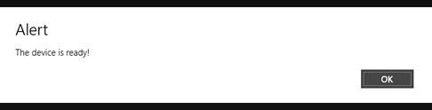

Windows 8 Platform Guide
Ce guide montre comment configurer votre environnement de développement SDK pour déployer des applications de Cordova pour Windows 8. Voir ci-dessous pour plus d'informations spécifiques à la plateforme :
Les outils de ligne de commande ci-dessus se référer aux versions antérieures à la 3.0 de Cordova. Voir l'Interface de ligne de commande pour plus d'informations sur l'interface actuelle.
Microsoft a désapprouvé le nom Metro style apps dans Windows 8 et Windows RT. MSDN se réfère maintenant à ce type d'application comme une application Windows Store , et ce guide fait suite à cette convention. En outre, dans ce guide Windows 8 signifie aussi bien Windows 8 et Windows RT.
1. Exigences
Windows 8
Visual Studio Professional 2012 ou supérieur ou Visual Studio 2012 Express pour Windows 8
Suivez les instructions ici pour soumettre vos applications Windows Store.
2. Installer le SDK + Cordova
Mettre en place votre variante préférée de Visual Studio 2012. Toutes versions payantes du produit (professionnel, etc.) vous permettent de créer des applications Windows Store. Vous avez besoin d' exprimer pour Windows 8 pour créer des applications Windows Store à l'aide de l' Express éditions.
Téléchargez et décompressez la dernière version de Cordova. Vous travaillerez le
lib\windows-8sous-répertoire.
3. Mettre en place le nouveau projet
Vous pouvez déjà créer des applications de Windows 8 en utilisant le HTML/JavaScript suivi disponible dans Windows Store apps. Utiliser Cordova dans Windows Store apps pour exposer les mêmes API que sur d'autres plates-formes de Cordova-prise en charge.
Ouvrez Visual Studio 2012 et choisissez Nouveau projet.
Sélectionnez Installé → modèle → Other Languages → JavaScript → Windows Store dans l'arbre, puis App vide dans la liste de projets. Entrez n'importe quel nom de projet, vous aimez, tels que
CordovaWin8Foocomme dans cet exemple.
Microsoft continue d'utiliser
default.htmlcomme la page d'accueil par défaut, mais la plupart des web développeurs utilisentindex.html. (Plus il est probable que dans les autres variantes de la plate-forme de votre projet, vous utilisezindex.htmlcomme nom de votre page par défaut.) Pour résoudre ce problème, en renommer de l'Explorateur ledefault.htmlfichier àindex.html. Puis double-cliquez sur lepackage.appxmanifestdu fichier et modifiez la valeur de page de démarrage àindex.html.
D'inclure
cordova.jsdans votre projet, faites un clic droit sur lejsdans l'Explorateur de solutions et sélectionnez Ajouter l'article → nouveaurépertoire. Localiser lecordova.jsfichier dans lelib\windows-8répertoire mentionné ci-dessus.Modifiez le code pour
index.html. Ajoutez une référence àcordova.js. Vous pouvez faire cela manuellement ou en faisant glisser le fichier depuis l'Explorateur de solutions.
Ajout d'une référence...
<!--WinJS références--> < lien href="//Microsoft.WinJS.1.0/css/ui-dark.css" rel = "stylesheet" / >< script src="//Microsoft.WinJS.1.0/js/base.js" >< / script >< script src="//Microsoft.WinJS.1.0/js/ui.js" >< / script ><!--Cordova--> < script src="/js/cordova.js" >< / script ><!--CordovaWin8Foo références--> < lien href="/css/default.css" rel = "stylesheet" / >< script src="/js/default.js" >< / script >
- Ensuite, ajoutez un code qui illustre Cordova travaille.
Ajout d'un gestionnaire de « deviceready »...
<body>
<p>Content goes here</p>
<script type="text/javascript">
console.log("Subscribing...");
document.addEventListener("deviceready", function () {
navigator.notification.alert("The device is ready!");
});
</script>
</body>
5. Test du projet
Exécutez le projet de Visual Studio. Vous verrez la boîte de message apparaît :

Fait !
C'est tout ! Vous êtes maintenant prêt à créer des applications Windows Store avec Cordova.